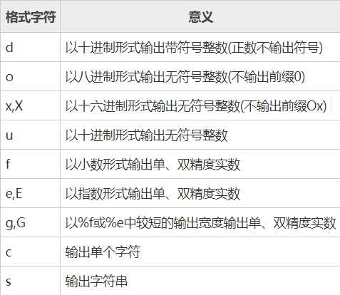
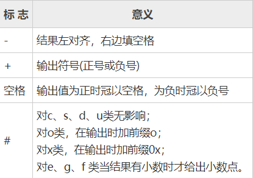
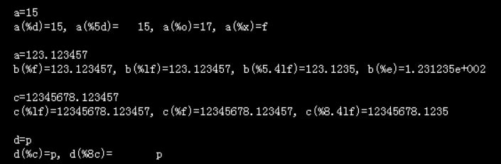
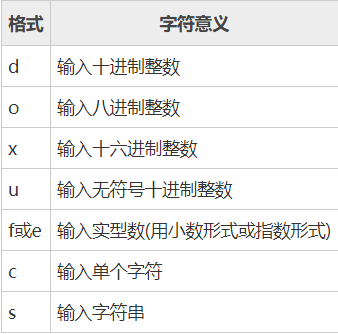

C语言标准输入输出、相关函数
格式化输入输出函数：
printf()函数：
格式字符串
在Turbo C中格式字符串的一般形式为：[标志][输出最小宽度][.精度][长度]类型。
其中方括号[]中的项为可选项。
1) 类型
类型字符用以表示输出数据的类型，其格式符和意义如下表所示：

2) 标志
标志字符为 -、+、# 和空格四种，其意义下表所示：

3) 输出最小宽度
用十进制整数来表示输出的最少位数。若实际位数多于定义的宽度，则按实际位数输出，若实际位数少于定义的宽度则补以空格或0。
4) 精度
精度格式符以“.”开头，后跟十进制整数。本项的意义是：如果输出数字，则表示小数的位数；如果输出的是字符，则表示输出字符的个数；若实际位数大于所定义的精度数，则截去超过的部分。
5) 长度
长度格式符为h、l两种，h表示按短整型量输出，l表示按长整型量输出。
1 |
|

使用printf函数时还要注意一个问题，那就是输出表列中的求值顺序。不同的编译系统不一定相同，可以从左到右，也可从右到左。
1 |
|
1 | The raw value: i=8 |
1 |
|
1 | The raw value: i=8 |
scanf()函数:
格式字符串
格式字符串的一般形式为：%[*][输入数据宽度][长度]类型
其中有方括号[]的项为任选项。各项的意义如下。
1) 类型
表示输入数据的类型，其格式符和意义如下表所示。

2) “”符
用以表示该输入项，读入后不赋予相应的变量，即跳过该输入值。如：
纯文本复制
`scanf(“%d %d %d”,&a,&b);`
当输入为：1 2 3时，把1赋予a，2被跳过，3赋予b。
3) 宽度
用十进制整数指定输入的宽度（即字符数）。例如：scanf("%5d",&a);
输入12345678只把12345赋予变量a，其余部分被截去。又如：scanf("%4d%4d",&a,&b);
输入12345678将把1234赋予a，而把5678赋予b。
4) 长度
长度格式符为l和h，l表示输入长整型数据（如%ld）和双精度浮点数（如%lf）。h表示输入短整型数据。
使用scanf函数还必须注意以下几点：
- scanf函数中没有精度控制，如：scanf(“%5.2f”,&a);是非法的。不能企图用此语句输入小数为2位的实数。
- scanf中要求给出变量地址，如给出变量名则会出错。如 scanf(“%d”,a);是非法的，应改为scnaf(“%d”,&a);才是合法的。
- 在输入多个数值数据时，若格式控制串中没有非格式字符作输入数据之间的间隔则可用空格，TAB或回车作间隔。C编译在碰到空格，TAB，回车或非法数据(如对“%d”输入“12A”时，A即为非法数据)时即认为该数据结束。
- 在输入字符数据时，若格式控制串中无非格式字符，则认为所有输入的字符均为有效字符。
例如：scanf("%c%c%c",&a,&b,&c);
输入 d、e、f 则把’d’赋予a，’ ‘ 赋予b，’e’赋予c。只有当输入为 def 时，才能把’d’赋于a，’e’赋予b，’f’赋予c。
如果在格式控制中加入空格作为间隔，如：scanf ("%c %c %c",&a,&b,&c);
则输入时各数据之间可加空格。
1 |
|
由于scanf函数”%c%c”中没有空格，输入M N，结果输出只有M。而输入改为MN时则可输出MN两字符。
1 |
|
本例表示scanf格式控制串”%c %c”之间有空格时，输入的数据之间可以有空格间隔。
5) 如果格式控制串中有非格式字符则输入时也要输入该非格式字符。
例如：scanf("%d,%d,%d",&a,&b,&c);
其中用非格式符“ , ”作间隔符，故输入时应为：5,6,7。又如：scanf("a=%d,b=%d,c=%d",&a,&b,&c);
则输入应为：a=5,b=6,c=7。
6) 如输入的数据与输出的类型不一致时，虽然编译能够通过，但结果将不正确。
1 |
|
由于输入数据类型为整型，而输出语句的格式串中说明为长整型，因此输出结果和输入数据不符。如改动程序如下：
1 |
|
1 | 运行结果为： |
当输入数据改为长整型后，输入输出数据相等。
1 |
|
输入三个小写字母，输出其ASCII码和对应的大写字母。
1 |
|
输出各种数据类型的字节长度。
非格式化的输入输出函数：
puts()函数：
puts()函数用于将一字符串放到标准输出流（stdout）中，并在最后增加换行符 ‘\n’，其函数原型如下：int puts(char *string);
【参数】string为要输出的字符串。
【返回值】输出成功返回非0值，否则返回0。
puts()从string的开头往stdout中输出字符，直到遇见结束标志 ‘\0’，’\0’不会被输出到stdout。
一个简单的例子，直接将字符串输出1
2
3
4
5
6
7
int main(void)
{
char str[100] = "The string come from puts";
puts(str);
return 0;
}
程序中puts()函数的作用与语句“printf(“%s\n”,s);的作用相同，可以认为puts()是printf()函数的简化版。
gets()函数
不要用gets()了
gets()函数用于从缓冲区中读取字符串，其原型如下：char *gets(char *string);
gets()函数从流中读取字符串，直到出现换行符或读到文件尾为止，最后加上NULL作为字符串结束。所读取的字符串暂存在给定的参数string中。
【返回值】若成功则返回string的指针，否则返回NULL。
注意：由于gets()不检查字符串string的大小，必须遇到换行符或文件结尾才会结束输入，因此容易造成缓存溢出的安全性问题，导致程序崩溃，可以使用fgets()代替。
如果你在GCC中使用gets()，编译无法通过，会提示：
the ‘gets’ function is dangerous and shout not be used.
putchar()函数
函数putchar()用于将给定的字符输出到控制台，其原型如下：int putchar (int ch);
【参数】ch为要输出的字符。
【返回值】输出成功，返回该字符的ASCII码值，否则返回EOF。
说明：putchar()非真正函数，而是putc(ch, stdout)宏定义。
1 |
|
getchar()、getche()、getch() 函数，它们都用来从控制台获取字符，getchar() 会等待用户按下回车键才开始读取，而 getche()、getch() 会立即读取。这是因为 getchar() 带有缓冲区，用户输入的数据会暂时保存到缓冲区，直到按下回车键才开始读取；而 getche()、getch() 不带缓冲区，只能立即读取。
getchar()函数
getchar() 函数的特点是：如果缓冲区中没有内容，那么等待用户输入；如果有内容，哪怕一个字符，也会直接从缓冲区中读取数据，不会等待用户输入。
第一次调用 getchar() 时，会等待用户输入，用户输入的所有字符都被放到标准输入（stdin）缓冲区，直到用户按下回车键为止（回车符也被放入缓冲区）。用户按下回车键，getchar() 函数才开始从缓冲区中读取数据，每次读取一个字符。
借助 getchar() 函数将 \n 从缓冲区中清除：
1 |
|
1 | 运行结果： |
执行完第一个 scanf() 后，缓冲区中剩下换行符 \n，我们使用 getchar() 将其读出（并不使用），执行到第二个 scanf() 时，由于缓冲区中没有内容，所以会等待用户输入。
getch()函数
getch 和 getchar 的作用类似，都是从键盘读取一个字符，但是：
getch 不带回显，也就是说，你输入的字符不会在屏幕上显示出来。
getch 没有缓冲区，也就是说，输入一个字符就立即读取。
1 |
|
1 | 先输入 'a'，再输入 'b'，运行结果为： |
getche()函数
getche()和getch()很相似，也没有缓冲区，区别在于：getch()无回显，getche()有回显。
1 |
|
1 | 先输入 'a'，再输入 'b'，运行结果为： |
fgets()函数：
fgets()函数用于从文件流中读取一行或指定个数的字符，其原型为：char * fgets(char * string, int size, FILE * stream);
参数说明：
- string为一个字符数组，用来保存读取到的字符。
- size为要读取的字符的个数。如果该行字符数大于size-1，则读到 size-1 个字符时结束，并在最后补充’ \0’；如果该行字符数小于等于 size-1，则读取所有字符，并在最后补充 ‘\0’。即，每次最多读取 size-1 个字符。
- stream为文件流指针。
【返回值】读取成功，返回读取到的字符串，即string；失败或读到文件结尾返回NULL。因此我们不能直接通过fgets()的返回值来判断函数是否是出错而终止的，应该借助feof()函数或者ferror()函数来判断。
注意：fgets()与gets()不一样，不仅仅是因为gets()函数只有一个参数 FILE *stream，更重要的是，fgets()可以指定最大读取的字符串的个数，杜绝了gets()使用不当造成缓存溢出的问题。
从myfile.txt文件中读取最多99个字符。1
2
3
4
5
6
7
8
9
10
11
12
13
14
15
int main()
{
FILE * pFile;
char mystring [100];
pFile = fopen ("myfile.txt" , "r");
if (pFile == NULL)
perror ("Error opening file");
else {
if ( fgets (mystring , 100 , pFile) != NULL )
puts (mystring);
fclose (pFile);
}
return 0;
}
又如，使用fputs()写一个文件，然后fgets()读取文件内容并显示。
1 |
|
1 | 运行结果： |
程序首先创建一个空文件，并利用fputs()函数写 入两行字符串，刷新关闭。然后重新以只读的方式打开该文件， 使用fgets()函数连续两次读取该文件，第一次读取3-1个字符，第 二次读取一行。最终结果都显示出来。